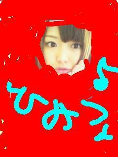
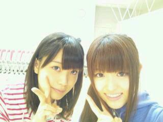

2012/0331Satきたぞ〜っ(o・・o)
こんばんごっ(o・・o)
さゆりんごっ(o・・o)
いっぱいコメントありがとうございます♪
昨日は
チャンピオンさんの
取材でした♪
可愛い衣装きせてもらって
楽しい撮影やったよ〜(*^^*)
みたいですか〜？
じゃん♪

残念ながら
まだ ひみつんご なのです(>_<)
また発売近くなったら
お話しますね〜o(*⌒―⌒*)o
そして！
何だかんだと
日々を過ごしているうちに
やって参りました!!
東京個別握手会♪
ほんと、遠足みたいに
あっとゆう間にきますね〜(*´ー｀*)
どきどきわくわくの
今日ですよ〜＼(^^)／
東京での
初めての握手会...
どうなるんやろ〜(>_<)
みなさん来てくれはりますのん〜(>_<)？
緊張しますか〜？
大丈夫よ〜(*´ー｀*)
話すことないわ〜(´；ω；`)って方！
お手々つないで
見つめあっちゃいましょー(*^o^)／＼(^-^*)
最近やる気ないわ〜(ノ-_-)ノ~┻━┻って方！
さゆりんごぱんち
してやんよっ(ゝω・´★)キラッ
宿題終わってないわ〜( ´△｀)って方！
さゆりんごきっく
してやんよっ(ゝω・´★)キラッ
朝ちゃんと起きられん〜(＿＿*)Ｚｚｚ
って方！
さゆりんごちょっぷ
してやんよっ(ゝω・´★)
試験受かったよ〜って方！
さゆりんも一緒に
喜ばしてくださいっ(o・・o)/
今日の為にさゆりんごぱわー
いっぱい充電したのだっ(｀・ω・´)キリッ
あっ、ほんまに
話すことないわ〜って方に
さゆりんから質問！
お肉派？
魚派？
野菜派？
また食べもん〜ってww？
ほなら、もうひとつ！
今年やりたいな〜って
思ってることは
なんですか？
みなさまお待ちしてます〜(*^^*)♪
昨日は
まいまいのお誕生日でしたっ☆
いつもかわいいまいまい♪
大好きなんよー＼(^_^)(^_^)／

ほなら、またね〜o(*⌒―⌒*)o
さゆりんごでしたっ(o・・o)/~
2012/03/31 06:54
コメント(306)
今日いくよ！
新技さゆりんぐちょっぷ頂きにいきます笑
終わったらもう一回コメントするねー
 Masaki
Masaki
新技さゆりんぐちょっぷ頂きにいきます笑
終わったらもう一回コメントするねー
眠たいなう。
今日俺行けんけどさゆりん
楽しんできてねー！！
大阪個別は行くからー
たんたかたん＼(^-^)／
今日俺行けんけどさゆりん
楽しんできてねー！！
大阪個別は行くからー
たんたかたん＼(^-^)／
今日個別行くよー ♪♪♪
でも咽頭炎になって声が出なく
なっちゃったから不安だよーorz
でもさゆりんにはやくはやく
会いたいなー＼(^O^)／＼(^O^)／
なんでなんよーー！！
見つめ合ってさゆりんごぱんちしてもらいたくてたまらなーい(≧∀≦)
まじ楽しみ♪
２部に行くから待っててねー♪♪
茨城のぶんぶん(・∀・)
見つめ合ってさゆりんごぱんちしてもらいたくてたまらなーい(≧∀≦)
まじ楽しみ♪
２部に行くから待っててねー♪♪
茨城のぶんぶん(・∀・)
さゆりんおはよう(^O^)／
今か今かと待ちわびた東京個別！！！！
選手の名古屋は3部だけの短い時間だったけど、
今日はたくさんあるんで(笑)
がんがる★☆
さゆりんごぱんちくらいに行きまっせ(人´ω｀)ﾀﾊｯ
今か今かと待ちわびた東京個別！！！！
選手の名古屋は3部だけの短い時間だったけど、
今日はたくさんあるんで(笑)
がんがる★☆
さゆりんごぱんちくらいに行きまっせ(人´ω｀)ﾀﾊｯ
さゆりんご、おはよー( ´ ▽ ` )ﾉ
今日は待ちに待った個別＼(^o^)／
でも、さゆりんご取れなかったんだよーヽ(；▽；)ノ
だから遠くから妄想握手しよ 笑
2ndの個別はもう確保済みだからその時にいっぱい喋れれば良いな( ´ ▽ ` )ﾉ
今日は待ちに待った個別＼(^o^)／
でも、さゆりんご取れなかったんだよーヽ(；▽；)ノ
だから遠くから妄想握手しよ 笑
2ndの個別はもう確保済みだからその時にいっぱい喋れれば良いな( ´ ▽ ` )ﾉ
おはよー！
今日は握手会だね(^O^)
チャンピオンめっちゃ楽しみだわ～( ´ ▽ ` )ﾉ
僕はお肉派ですね～！焼き肉大好きー！
今日握手会でたくさんお話しましょー(^-^)/
とりあえずさゆりんごパンチよろしくおねがいしますw
今日は握手会だね(^O^)
チャンピオンめっちゃ楽しみだわ～( ´ ▽ ` )ﾉ
僕はお肉派ですね～！焼き肉大好きー！
今日握手会でたくさんお話しましょー(^-^)/
とりあえずさゆりんごパンチよろしくおねがいしますw
お疲れ様です♪
初コメですかね!?
今日は、頑張ってくださいね＊
またコメントします!!
おはやっほー!!たつあきです(^∇^)
さゆりんご～(・∀・)(・∀・)全国以来だよ～!!長かった長かった～
どんだけ待ったことか!!(>_<)
一部から飛ばしていくんでよろしくなぁー
最近寝てばっかだからさゆりんごチョップよろしくね～(´ω｀)
あとアニメの話しよう！
肉派ですぼくは♪
さゆりんご～(・∀・)(・∀・)全国以来だよ～!!長かった長かった～
どんだけ待ったことか!!(>_<)
一部から飛ばしていくんでよろしくなぁー
最近寝てばっかだからさゆりんごチョップよろしくね～(´ω｀)
あとアニメの話しよう！
肉派ですぼくは♪
おはよう(^-^)/
今日のイベントがんばってね
今回も遠すぎてオレは行けんけど…
いつもさゆりんのこと応援してるよ
質問の返事します！
まず食べ物は肉派だよ
特に牛肉が好きやん！
焼き肉とか食べる時は吐きそうになるくらいまで
食べまくるんよ＼(^o^)／笑
今年やりたいな～て思ってることは
夏に東京いくから
乃木坂のイベントに行って
さゆりんと握手してお話することですっ
早くさゆりんと会いたいな～
今日はこの辺で！
次の更新待ってます☆
さゆりん、おはよヽ(^0^)ﾉ
何の撮影だろー！気になるー(´Д｀)
今日個別頑張ってねぇ！！
私は行けないんだけど……
ぴょんぴょんしすぎて疲れないように注意(ﾟﾛﾟ)
さゆりんごぱんちは群馬でしてもらったから
今度はさゆりんごチョップしてもらいに行くね(*^^*)
ほなまた！
ばいばいりんご、さゆりんごヽ(^0^)ﾉ
ゆいつん
何の撮影だろー！気になるー(´Д｀)
今日個別頑張ってねぇ！！
私は行けないんだけど……
ぴょんぴょんしすぎて疲れないように注意(ﾟﾛﾟ)
さゆりんごぱんちは群馬でしてもらったから
今度はさゆりんごチョップしてもらいに行くね(*^^*)
ほなまた！
ばいばいりんご、さゆりんごヽ(^0^)ﾉ
ゆいつん
おはようございます！
これから会いに行きますー今日はよろしくお願いします！
さゆりんごパワー！
これから会いに行きますー今日はよろしくお願いします！
さゆりんごパワー！
今日もがんばってくださいヘ(≧▽≦ヘ)♪
いけなくて残念です(>_<)
いけなくて残念です(>_<)
今日個別握手行けない。さゆりん推しとして失格の僕です。個握楽しんでくださいね♪僕はさゆりんがブログを更新するのを楽しみに待ってます！
ごめりんご
２回目です！
俺は断然肉派やけど最近は野菜派やわ(-.-)
ほんで今年の目標は大学で単位を落とさないのと
認知をもらう、彼女を作る！！
こんくらいです(>_<)
逆にさゆりんが今年したいことは？？
たんたかたん＼(^-^)／
２回目です！
俺は断然肉派やけど最近は野菜派やわ(-.-)
ほんで今年の目標は大学で単位を落とさないのと
認知をもらう、彼女を作る！！
こんくらいです(>_<)
逆にさゆりんが今年したいことは？？
たんたかたん＼(^-^)／
おはりんご( ´ ▽ ` )ﾉ
今日はさゆりんごに会えるから、めっちゃ楽しみ！
ほんまに、遠足と一緒やね！
楽しみすぎて辛い（；￣ェ￣）
今日はさゆりんごに会えるから、めっちゃ楽しみ！
ほんまに、遠足と一緒やね！
楽しみすぎて辛い（；￣ェ￣）
さゆりん頑張れー！
さゆりんごちょっぷしてもらわなきゃダメだなぁ
今日はいよいよ東京個別だね!!
もうちょっとで出発!!
さゆりんいっぱい話そうねー
今日はいよいよ東京個別だね!!
もうちょっとで出発!!
さゆりんいっぱい話そうねー
おはさゆりんごっ(*´∇｀*)♪
さゆりんと会えるのが楽しみ過ぎて徹夜なうｗ
眠そうにしてたらさゆりんごぱんちおねがいしますｗ
準備してもうすぐ家出るよ！
さゆりんと会えるのが楽しみ過ぎて徹夜なうｗ
眠そうにしてたらさゆりんごぱんちおねがいしますｗ
準備してもうすぐ家出るよ！
おはようございます！
高崎イオンです！
お仕事でさゆりんごと握手しに行けへんよ(´･ω･`)
全然さゆりんごに会いに行けへんくて忘れられてへんかとても心配なんよ( ´艸｀)
だからさゆりんごに会いたいよ(≧∀≦)
またいつの日か会える日を楽しみにしてます！
あっ体調とか身体には気をつけて下さいね！
それでは握手楽しんできてねo(^o^)o
さゆりんごビーム(>_<)ゞ
高崎イオンです！
お仕事でさゆりんごと握手しに行けへんよ(´･ω･`)
全然さゆりんごに会いに行けへんくて忘れられてへんかとても心配なんよ( ´艸｀)
だからさゆりんごに会いたいよ(≧∀≦)
またいつの日か会える日を楽しみにしてます！
あっ体調とか身体には気をつけて下さいね！
それでは握手楽しんできてねo(^o^)o
さゆりんごビーム(>_<)ゞ
おはりんごっ(o・・o)
チャンピオンどんな衣装だったんだろ？
楽しみにしてるねー!!
そして今日は東京個別～！！
今から会場向かうよ！
1部から行くからいっぱいお話しようね(*^^*)!!
さゆりんに会うの楽しみ～
ではでは
また後でねっ！
ほな～
チャンピオンどんな衣装だったんだろ？
楽しみにしてるねー!!
そして今日は東京個別～！！
今から会場向かうよ！
1部から行くからいっぱいお話しようね(*^^*)!!
さゆりんに会うの楽しみ～
ではでは
また後でねっ！
ほな～
さゆりんおはようo(*⌒O⌒)ｂ
今日は待ちにまった握手会だね!!
さゆりんに今日会えるとか嬉しくて!!東京の全国握手以来だから楽しみでしかたないよー(>_<)！！
さゆりんのパンチいただきに行きます!!
宜しくね(^-^)♪
今日は待ちにまった握手会だね!!
さゆりんに今日会えるとか嬉しくて!!東京の全国握手以来だから楽しみでしかたないよー(>_<)！！
さゆりんのパンチいただきに行きます!!
宜しくね(^-^)♪
ごめんなさい＞＜
今職場なんで今日もまた行けません・・・。
早くさゆりんに会いたい・・・。
てか髪の色が少し？って
気のせいじゃないよね？？？
まひろゎちなみにお肉派だけど
今ゎ期間限定で
晩御飯ゎサラダだけしか食べてない＞ｗ＜
少しダイエットしなきゃだからねぇ～
○○してやんよっ！って
AngelBeats!のセリフみたい？
あぁ久しぶりにガルデモでも
帰って聞こうかなぁ♪
あのシーンゎホント感動したな＞＜
今職場なんで今日もまた行けません・・・。
早くさゆりんに会いたい・・・。
てか髪の色が少し？って
気のせいじゃないよね？？？
まひろゎちなみにお肉派だけど
今ゎ期間限定で
晩御飯ゎサラダだけしか食べてない＞ｗ＜
少しダイエットしなきゃだからねぇ～
○○してやんよっ！って
AngelBeats!のセリフみたい？
あぁ久しぶりにガルデモでも
帰って聞こうかなぁ♪
あのシーンゎホント感動したな＞＜
こ～へいも今日のために
充電してたみたいよ(^-^)
今日はいろんなメンバーの
パーカーが出陣するぜい！
あ、俺はもちろん七瀬だけど
さゆりんとこも顔出すわ(^o^)
待っとけ～！
充電してたみたいよ(^-^)
今日はいろんなメンバーの
パーカーが出陣するぜい！
あ、俺はもちろん七瀬だけど
さゆりんとこも顔出すわ(^o^)
待っとけ～！
さゆりん、おはようございます。
今日は、待ちに待った東京での
個別握手会ですね(*^^*)
私は既に新幹線で移動していますよ(^^)
一部には、多分間に合うと思います。
今日は、東京は雨なのでしょうか？
空き時間に買い物をしようと思って
いるので、雨だったら面倒ですね(+_+)
では、今日はどうぞよろしくお願い
しますm(_ _)m
今日は、待ちに待った東京での
個別握手会ですね(*^^*)
私は既に新幹線で移動していますよ(^^)
一部には、多分間に合うと思います。
今日は、東京は雨なのでしょうか？
空き時間に買い物をしようと思って
いるので、雨だったら面倒ですね(+_+)
では、今日はどうぞよろしくお願い
しますm(_ _)m
紗由理さん(^-^)
今日、紗由理さんに会えるのめちゃめちゃ楽しみです(^^ゞ！！(笑)
緊張するけど、許してくださいね？(笑)(爆)

今日、紗由理さんに会えるのめちゃめちゃ楽しみです(^^ゞ！！(笑)
緊張するけど、許してくださいね？(笑)(爆)
おはようございます。
今日、行かせていただきま～す。
さゆりんご、やさしいね。
じゃあ、何してもらおうかな．．．
今日、行かせていただきま～す。
さゆりんご、やさしいね。
じゃあ、何してもらおうかな．．．
一週間前が名古屋だったと考えるとあっという間だね(^ｏ^)
今まで全然会えてなかったから頻繁に会えてうれしい限りです☆
でも今日終わるとまた一月くらい会えないから今日を満喫するよ!(*´ー｀*)
今まで全然会えてなかったから頻繁に会えてうれしい限りです☆
でも今日終わるとまた一月くらい会えないから今日を満喫するよ!(*´ー｀*)
沙友理の所に握手しに行けない人には何してくれるの？笑
まぁ、握手しには行けないけど、今日会場にはいるから見かけたらよろしく!(b^ー°)←
.
質問返しは、とりあえずお肉大好きだよね(≧∇≦)
基本お肉しか食べないよね(≧∇≦)←笑
とは言っても、レバーは食べられないってゆぅ…orz
.
今年やりたい事は、沙友理に出来るだけたくさん会いに行くって事かな♪
もちろん今年だけじゃなく、来年も再来年もたくさん会いに行っちゃうけどね(^з^)-☆Chu!!
.
まいまいお誕生日おめでとう♪
今年1年がまいまいにとって良い1年でありますよぉに(^O^)
.
てかこの前、市川で沙友理みたいな人見かけて焦ったー(^_^;)笑
仕事中だったし後ろ姿だけだったけどマジ雰囲気似てた！笑
まぁ、多分人違いとは思うけどあれが沙友理だったらショックでかいな(┳◇┳)
.
とまぁ今回はこんな感じで！
今日は個握楽しんで(*^o^*)
あと、オレのこと見かけたらよろしくな!(b^ー°)←2回目
ほな、またな(^O^)ノシ
まぁ、握手しには行けないけど、今日会場にはいるから見かけたらよろしく!(b^ー°)←
.
質問返しは、とりあえずお肉大好きだよね(≧∇≦)
基本お肉しか食べないよね(≧∇≦)←笑
とは言っても、レバーは食べられないってゆぅ…orz
.
今年やりたい事は、沙友理に出来るだけたくさん会いに行くって事かな♪
もちろん今年だけじゃなく、来年も再来年もたくさん会いに行っちゃうけどね(^з^)-☆Chu!!
.
まいまいお誕生日おめでとう♪
今年1年がまいまいにとって良い1年でありますよぉに(^O^)
.
てかこの前、市川で沙友理みたいな人見かけて焦ったー(^_^;)笑
仕事中だったし後ろ姿だけだったけどマジ雰囲気似てた！笑
まぁ、多分人違いとは思うけどあれが沙友理だったらショックでかいな(┳◇┳)
.
とまぁ今回はこんな感じで！
今日は個握楽しんで(*^o^*)
あと、オレのこと見かけたらよろしくな!(b^ー°)←2回目
ほな、またな(^O^)ノシ
おはようございます♪ヽ(´▽｀)/握手会頑張ってください。俺は、今日から一人暮らしします。正直かなり不安です(´；ω；`)そんな俺の不安が吹き飛ぶように、さゆりんごぱんち下さい(￣∇￣*)ゞ
では、今日も頑張ってください♪ヽ(´▽｀)/
では、今日も頑張ってください♪ヽ(´▽｀)/
そーれすよね～衣装ってNGでやんすからね～～o(^-^o)(o^-^)o！(＾＾)！にしても
がーと林檎カラーってのがさゆりんごらしいどすな～！(＾＾)！！(＾＾)！そっきゃー
なんか賑やかそうなイメージでやんすね～。にしても、パターンもってらっしゃるんで
げすね～可愛いだがや～ん！(＾＾)！( ^^)Y☆Y(^^ )にしても深川さんとの2Sも可愛い画
ですわに～(^_-)-☆o(^-^)oよき事でやんすね～。あの食べ物ロケの時も可愛かった
ですし～乃木どこ以外で初めてでた番組～(゜▽゜)(＃^.^＃)まあ、頑張ってくらさい
ましまし～(＃^.^＃)o(^-^)o
がーと林檎カラーってのがさゆりんごらしいどすな～！(＾＾)！！(＾＾)！そっきゃー
なんか賑やかそうなイメージでやんすね～。にしても、パターンもってらっしゃるんで
げすね～可愛いだがや～ん！(＾＾)！( ^^)Y☆Y(^^ )にしても深川さんとの2Sも可愛い画
ですわに～(^_-)-☆o(^-^)oよき事でやんすね～。あの食べ物ロケの時も可愛かった
ですし～乃木どこ以外で初めてでた番組～(゜▽゜)(＃^.^＃)まあ、頑張ってくらさい
ましまし～(＃^.^＃)o(^-^)o
さゆりんごー!!
東京個握いけなくてごめんね(T_T) ちょっと遠いんよーなんでなんよー(>__<)
東京個握いけなくてごめんね(T_T) ちょっと遠いんよーなんでなんよー(>__<)
おはよう、さゆりん(^-^)
今日はオレは東京の個別握手会行けないんやけど、楽しんできてな(^o^)
今日はオレは東京の個別握手会行けないんやけど、楽しんできてな(^o^)
おはようございます。
桜宮の 櫻は さゆりんご・・いやいやまだ
咲いてません。
やるき げんき さゆりんご
なんでも かんでも さゆりんご
でも さゆりんごも おんなのこ
みんなと なかよく がんばりんご
おおさか 1番の おやじの
応援団 ベルボーイでした。
さゆりん、おはよう(^^)v
今日は今から東京ドームシティ向かうよ、ってんだったらいいけど無念の仕事です(T_T)今日は体は行けないけど魂はさゆりんや乃木坂のみんな、乃木坂ファンのとこに飛ばしときます（怖いわ！！）今回は行けませんけど2ndの時は会いにいくからね(^^)v今日いくみなさんは楽しんできてください(^O^)
今日は今から東京ドームシティ向かうよ、ってんだったらいいけど無念の仕事です(T_T)今日は体は行けないけど魂はさゆりんや乃木坂のみんな、乃木坂ファンのとこに飛ばしときます（怖いわ！！）今回は行けませんけど2ndの時は会いにいくからね(^^)v今日いくみなさんは楽しんできてください(^O^)
宿題まだ二つも残ってるのでさゆりんごキックお願いします←
東京観光するしか！
後楽園遊園地で僕と握手するしか（笑）
いきまっせーーーー！！！
さゆりんごに会いたかったけど、ハズレたよ(泣)
ハズレたのは仕方ないので、今日はいくちゃんにいくちゃん＼(^o^)／
それでわ、またの機会にチャレンジしてみまふ☆
ハズレたのは仕方ないので、今日はいくちゃんにいくちゃん＼(^o^)／
それでわ、またの機会にチャレンジしてみまふ☆
さゆりんごちゃん、今日は個別握手会やね～。今日は久々に生さゆりんごちゃんに会えると思うとかなり緊張っすよ～。
今日は「勝」Tシャツ着て会いに行くので、優しくお願いしま～す。
今日は「勝」Tシャツ着て会いに行くので、優しくお願いしま～す。
今日個別行けなくてごめん！
高２のしょーごです(^-^)／
風邪引いちゃって個別
行けなくなっちゃった(>_<)
さゆりんごパワー
俺も貰いたかったわー(;_;)
自分は行けないけど
今日楽しんでね！
高２のしょーごです(^-^)／
風邪引いちゃって個別
行けなくなっちゃった(>_<)
さゆりんごパワー
俺も貰いたかったわー(;_;)
自分は行けないけど
今日楽しんでね！
ヤッホーおおきにー☆
更新ずっと待っとったんやでー！
毎度お馴染み、
関西弁でコメントしとる
航平やで(*^o^*)
残念ながら今日の握手会
参加できひん……
さゆりんごが恋しいねん！(＞Σ＜)
まぁ、楽しんできてや☆
終わったら私服公開
してくれへん？
さゆりんごの私服
楽しみなんや(o^ω^o)
・・・で、
さゆりんごパンチ？
さゆりんごキック？
そしてさゆりんごチョップ？
さゆりんご、
空手やっとったん？(笑)
俺はそんなに
強い人間ちゃうねんけど、
その餌食に
なってみたいもんやわ(￣∀￣)
さゆりんごパワー、
是非俺にも！！
ほんじゃ、私服公開
期待してんで☆
更新ずっと待っとったんやでー！
毎度お馴染み、
関西弁でコメントしとる
航平やで(*^o^*)
残念ながら今日の握手会
参加できひん……
さゆりんごが恋しいねん！(＞Σ＜)
まぁ、楽しんできてや☆
終わったら私服公開
してくれへん？
さゆりんごの私服
楽しみなんや(o^ω^o)
・・・で、
さゆりんごパンチ？
さゆりんごキック？
そしてさゆりんごチョップ？
さゆりんご、
空手やっとったん？(笑)
俺はそんなに
強い人間ちゃうねんけど、
その餌食に
なってみたいもんやわ(￣∀￣)
さゆりんごパワー、
是非俺にも！！
ほんじゃ、私服公開
期待してんで☆
めっちゃ握手会楽しみだったわー(*^o^*)
緊張して寝れなかった(>_<)
今日は一緒にピョンピョンしたりしようね(≧∇≦)
♪たける♪
緊張して寝れなかった(>_<)
今日は一緒にピョンピョンしたりしようね(≧∇≦)
♪たける♪
ひみつんごってなんすかwwww
久々の更新うれしんご！
本日も雨模様…
乃木坂イベント雨多くない？
さゆりん雨女？
大阪個別いくからまぢ楽しみ～
５部ぐらいなるといくらさゆりんでも
ぐったりしてる？
久々の更新うれしんご！
本日も雨模様…
乃木坂イベント雨多くない？
さゆりん雨女？
大阪個別いくからまぢ楽しみ～
５部ぐらいなるといくらさゆりんでも
ぐったりしてる？
初コメ!!
個握頑張れ!!
個握頑張れ!!
おかっちです(。・_・。)ノ
おはりんごっ
昨日も前の記事にコメントしたよ
ほんとに真っ赤な目立つりんご色の上着着てきたから、、、
今日の握手会よろしくねo(^o^)o
byさゆりんごと同い年のおかっち
おはりんごっ
昨日も前の記事にコメントしたよ
ほんとに真っ赤な目立つりんご色の上着着てきたから、、、
今日の握手会よろしくねo(^o^)o
byさゆりんごと同い年のおかっち
おはりんごっ(o・・o)
今日は夕方だけなんだけどよろしく！
食べ物は、パンケーキ10枚派かな←
冗談(笑)
まあ、肉も野菜も魚もどれもそれなりに取りますよ。
今日は夕方だけなんだけどよろしく！
食べ物は、パンケーキ10枚派かな←
冗談(笑)
まあ、肉も野菜も魚もどれもそれなりに取りますよ。
おはりんご♪
こんにちりんご♪
さゆりんご♪
今日は東京の個別握手会やね♪
めっちゃ行きたかったけど
東京はさすがに大阪から遠いよ(>_<)
大阪からさゆりんが
楽しそうに握手してるん想像しとくね(*^^*)笑
あっちなみにお肉派でもなく魚派でもなく
野菜派でもなく
僕は果物派やで(^^)笑
えっ!?果物の何が好きって!?
りんごに決まっちょるでしょ♪♪笑
今年やってみたいことは
お金めっちゃ稼いで
乃木坂を支援するよ(^^)v
今日は雨かもしれへんけど
さゆりんごパンチ&キック&チョップで
東京の人達の心に晴れ模様を作ってあげてなぁ☆
また更新待ってるなぁ☆
私服写メよろしく!!
こんにちりんご♪
さゆりんご♪
今日は東京の個別握手会やね♪
めっちゃ行きたかったけど
東京はさすがに大阪から遠いよ(>_<)
大阪からさゆりんが
楽しそうに握手してるん想像しとくね(*^^*)笑
あっちなみにお肉派でもなく魚派でもなく
野菜派でもなく
僕は果物派やで(^^)笑
えっ!?果物の何が好きって!?
りんごに決まっちょるでしょ♪♪笑
今年やってみたいことは
お金めっちゃ稼いで
乃木坂を支援するよ(^^)v
今日は雨かもしれへんけど
さゆりんごパンチ&キック&チョップで
東京の人達の心に晴れ模様を作ってあげてなぁ☆
また更新待ってるなぁ☆
私服写メよろしく!!
はじめまして＆おはようございますにゃあ（あずにゃん風に（笑）
今日の東京個別に参加しますよ！
乃木坂46のイベントに初めて参加するので、めっちゃ楽しみ☆
ちなみに自分もアニメ大好きなので、さゆりんと早くアニメや声優さんのお話したいですっ！
早くさゆりんに会いたいッス！
第４部に会いに行きますっ！
さゆりんごパンチいただきにまいりますっ！
てへぺろ
今日の東京個別に参加しますよ！
乃木坂46のイベントに初めて参加するので、めっちゃ楽しみ☆
ちなみに自分もアニメ大好きなので、さゆりんと早くアニメや声優さんのお話したいですっ！
早くさゆりんに会いたいッス！
第４部に会いに行きますっ！
さゆりんごパンチいただきにまいりますっ！
てへぺろ


さゆり～ん&iF991;
名古屋な全握行くから
待っててね&iF99B;